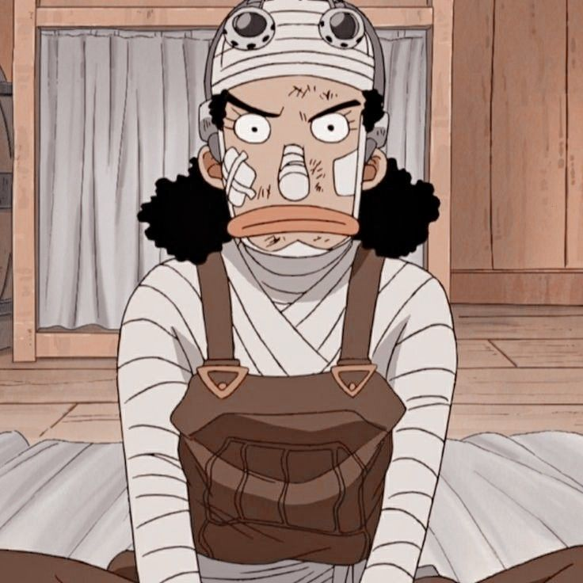

This is a story of a young boy made of rubber. Inspired by his childhood idol, the powerful pirate Red-Haired Shanks, he sets off on a jounrey from the East Blue Sea to find the mythical treasure, the One Piece, and proclaim himself King of the Pirates.
One Piece is a Japanese manga series written and illustrated by Eiichiro Oda. The stroy follows the adventures of Monkey D. Luffy, a boy whose body gained the properties of rubber after unintentionally eating a Devil Fruit. With his pirate crew, the Straw Hat Pirates, Luffy explores the Grand Line in search of the deceased King of the Pirates Gol D. Rogers's ultimate treasure known as the "One Piece" in order to become the next King of the Pirates!
One Piece is a Japanese anime TV series produced by Toei Animation that premeried in October 1999. Since its premiere in Japan, there are 20 seasons and over 1000 episodes that have been aired all over the world.
14 animated theatrical films based on the One Piece series have been released in Japan and around the world. Most recently, One Piece Film: Red premiered in North America and has already receieved a scored of 100% on Rotten Tomatoes.
He is a Japanese manga artist and the creator of the series One Piece (1997-present). With more that 516.5 million copies in circulation worldwide, One Piece is both the best-selling manga in history and the best-selling comic series printed in volume making Oda one of the best-selling fiction authors.
Captain of the Straw Hat Pirates
Personality:
Luffy is portrayed as a carefree, fun loving, happy-go-lucky character with great ambition and a huge appetite, often thinking with his stomach and comically gorging himself. Knowing the danfer ahead, he is willing to risk his life to become King of the Pirates and protect his crew.
Swordsman
Personality:
Zoro has a stern, serioius, and distanced personality but often reacts in a goofy and exaggerated comic style due to his short-tempered and impatient attitude. He is often the first to sense an enemy or danger and the first to react. He is often displayed as being well aware of dangeroius situations and the people around him.
The Navigator
Personality:
She can be devilish and cunning at times, and if she feels like it will even give her fights to Luffy, Zoro or Sanji. She loves money and making maps. Her dream is to make a map of the entire world!
Sniper King the Snipper
Personality:
Usopp is one of the most sentimental of the crew and cries or gets angry at times of emotional stress. At the beginning of the series, he was a lair and easily frightened, as well as anxiious, insecure, and compulsive. In desperate times he is able to put all these issues aside.
Blackleg Sanji the Cook
Personality:
Sanji is mostly seen as a composed, nonchalant, and calm individual who always keeps his cool when in dire situations. However, this is contrasted by the many comedic gags he partakes in, such as when in the presence of a lady or when insulted by a crew member.